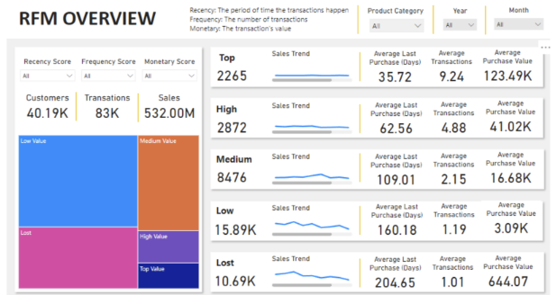
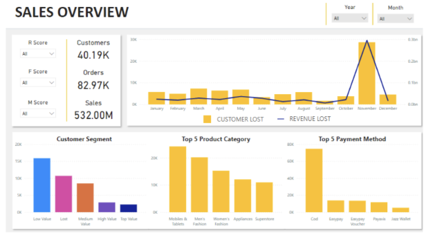
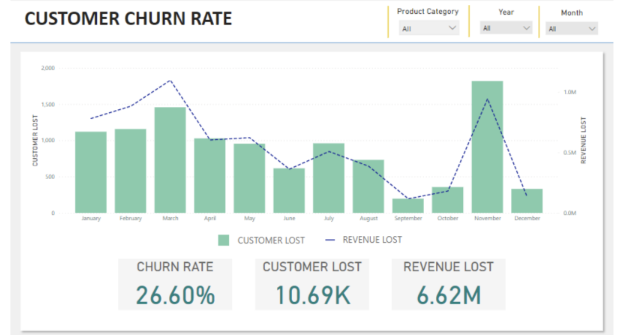

Wan Nazirul Hafiz

Summary
Working as data analyst, doing social listening and sentiment analysis on Tiktok, Facebook and Twitter
Technical Skills
- Python
- PowerBI
- SQL
- Google Colab/Jupyter
- Data Pre-processing
Professional Certification
- Certified Junior Data Scientist-2021
The Centre of Applied Data Science (CADS)
- Social Media Text Analytics with NLP -2022
Centre for Artificial Intelligence Technology (CAIT), FTSM UKM
- Remote Pilot of Certificate Competency -2022
Drone Academy Asia (CAAM Approved Certification)
Online Certification
- Microsoft Certified: Azure Data Fundamentals
- AWS Certified Cloud Practitioner
- Datacamp: Python Programmer Track
- Datacamp: Intermediate Data Science in Python
Professional Training
Elvira Anti Drone System Operation & Maintenance – 2022 (Netherland)
Robin Radar Systems
The training has been conducted in Netherland and Belgium by Robin Radar Systems, a technology leader in tracking and
classification of small objects.
The training consisted of theory and practical radar ELVIRA operation for drone detection.
Formal Education
Master of Science (Advanced Computer Networks)
Universiti Sains Malaysia (USM)
“Novel Implementation of 6LoWPAN-Based Street Light-As-Service (SlaaS) Framework to Power Intelligent
Parking Service System” – OpenCV, AWS
Bachelor of Electrical & Electronics Engineering (Hons) - 2019
Universiti Tenaga Nasional (UNITEN) – CGPA 3.24
Engineering & Computer Science- 2014
Centre for Foundation Studies, International Islamic University Malaysia (IIUM)
Pensijilan Tahfiz Al-Quran JAKIM-IIUM - 2012
Darul Quran JAKIM
Working Experience
Data Analyst
Analitika Ilmuwan
Cyberjaya, Selangor
May 2023-Present
- Executed sentiment analysis on social media platforms, extracting nuanced public opinion for a comprehensive marketing strategy.
- Utilized Power BI to visualize sentiment data, crafting interactive reports to depict consumer perception trends in real time
- Spearheaded a voter segmentation project, analyzing real-time election data to segment voter groups effectively during electoral campaigns.
- Developed dynamic Power BI dashboards that provided instant insights into voter behavior, aiding swift strategic adjustments on election days
- Oversee the development of persuasive presentations that communicate product value and data-driven insights to stakeholders
- Lead team members in best practices for data visualization, elevating the company’s analytical capabilities and product offerings
Data Analyst
Priority Dynamic
Subang, Selangor
September 2022-November 2022
- Perform data cleaning and data modelling for ecommerce dataset
- Perform RFM Analysis & Customer Segmentation
- Research about weightage average for different industries (RFM variables & segmentation)
- Enhance RFM Dashboard Visualisation
- Study the integration of Magento web APIs and create the script (in progress)
- All works be done by Python, PostgreSQL & Power BI
- Present and propose the end product to the client
Drone Radar Engineer
Highbase Resources Sdn Bhd
Bangi, Selangor
November 2021 – August 2022
Radar Engineer
- Conduct Proof of Concept (PoC) and demo sessions for federal and state government department
- Lead team and responsible for all planning and requirements needed to perform all the necessary
testing and analysisv
- Manage the import process of UAV radar equipment compliant with the regulators (SIRIM, MCMC)
- Perform installation of anti-drone system (radar, radio frequency & jammer) in Malaysia
- Prepare direct report on current projects to stake holders
- Ensure all operation and maintenance of anti-drone equipment are carried on in an appropriate way
- Take the necessary training for the benefit of the project being carried out (Remote Pilot training with
DAA at Cyberjaya and Drone Radar Operation training with ROBIN at Den Haag, Netherland)
- Knowledge of radar equipment, signal processing and target recognition from radar signatures
- Identify and propose new supplier/partner and potential opportunities in market to top management
Drone Remote Pilot
- Make sure UAV operation is compliant with the regulators (SIRIM, MCMC, CAAM)
- Ensure UAV is in good condition for operation
- Perform UAV operation risk assessment
- Perform flight checklist and operate according to the flight plan and operational procedures
- Perform emergency procedures or contingency plans if necessary
- Perform repair and scheduled maintenance for UAV
- Perform occurrence reporting if an accident/incident happens
- Handle the collection of images of identifiable individuals following Act 709, PDPA 2010
- Perform UAV operation according to MCAR 2016
Meteorological Radar Engineer
Highbase Resources Sdn Bhd
Bangi, Selangor
June 2020 – November 2021
Radar Engineer
- Perform installation and integration of weather radar system in Malaysia
- Perform repairs and troubleshooting for weather radar system in Malaysia
- Prepare technical report, properly documentation and deliver it to client
- Ensure preparation equipment and system for installation of new weather radar
- Manage the import process of weather radar equipment compliant with the regulators
- Manage the entry of foreign workers compliant with the regulators (Immigration, ESD)
- Manage radio frequency and microwave radiation safety assessment for weather radar stations
- Exposed to meteorological radar data products than been used for weather forecasting and analysis
- Knowledge of using weather data software such as RAINBOW and IRIS
Portfolio (Data Science)


